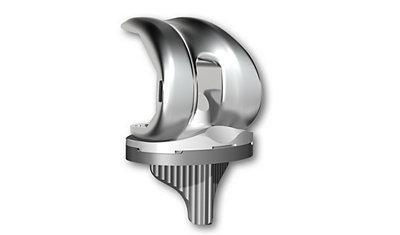
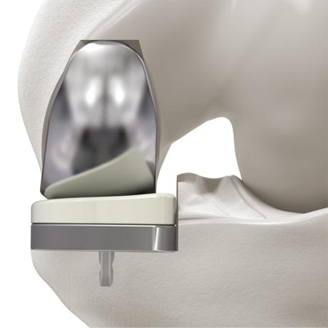

Introducción
La prótesis total de rodilla (PTR) es una intervención quirúrgica indicada principalmente en casos de artrosis avanzada u otras patologías que deterioran significativamente la articulación de la rodilla, limitando la calidad de vida del paciente.
El objetivo principal de esta cirugía es aliviar el dolor, mejorar la movilidad y restaurar la función articular, permitiendo al paciente retomar sus actividades cotidianas con mayor comodidad.
La PTR consiste en reemplazar las superficies articulares dañadas por componentes protésicos fabricados con materiales como metales y plásticos especiales (polietileno). Estos componentes pueden fijarse al hueso utilizando cemento acrílico o mediante técnicas que permiten su integración directa sin cemento.

Rodilla con artrosis vs. rodilla con prótesis total
Tipos de prótesis de rodilla
- Prótesis totales: Sustituyen toda la articulación de la rodilla.
- Prótesis unicompartimentales: Solo reemplazan el compartimento interno o externo. Se utilizan en casos seleccionados con artrosis localizada.

Prótesis total de rodilla

Prótesis unicompartimental
Es fundamental que el paciente participe activamente en el proceso de recuperación. Seguir las indicaciones de su cirujano, realizar los ejercicios de rehabilitación de forma constante y mantener una actitud proactiva son aspectos clave para una recuperación exitosa.
Expectativas realistas
La mayoría de los pacientes experimentan una gran reducción del dolor y una mejora significativa en su capacidad funcional. Sin embargo, la prótesis no permitirá hacer más de lo que se hacía antes de desarrollar artrosis. No es una rodilla «nueva» sino una articulación artificial que debe cuidarse.
- Caminar
- Nadar
- Bicicleta
- Senderismo leve
- Bailar
- Golf
- Correr
- Saltar
- Deportes de contacto
- Actividades de alto impacto
Posibles complicaciones
Si bien la tasa de éxito de esta cirugía es alta, como en cualquier intervención quirúrgica pueden presentarse complicaciones:
- Infección: Puede ser superficial o profunda. En casos graves, puede requerir recambio protésico. Puede aparecer incluso años después.
- Trombosis venosa profunda (TVP): Se previene con medicación anticoagulante, movilización precoz, medias compresivas y elevación de piernas.
- Problemas con los implantes: El aflojamiento o desgaste protésico puede ocurrir con el tiempo.
- Rigidez articular: Se previene con una rehabilitación adecuada.
- Luxación o inestabilidad: Menos frecuente, pero posible.
- Dolor persistente: Un pequeño porcentaje de pacientes puede tener molestias residuales.
- Lesión neurovascular: Es rara, pero puede afectar nervios o vasos cercanos.
No coloques almohadas o cojines bajo la rodilla de forma prolongada. Esto puede favorecer la aparición de rigidez articular. Si necesitas elevar la pierna, hazlo colocando soporte bajo el talón y dejando la rodilla en extensión.
Estancia hospitalaria
Tratamiento al alta
Se te pautará tratamiento anticoagulante (habitualmente heparina) durante 30 días, analgésicos y un calendario de revisiones clínicas.
Habitualmente al mes, a los 3 y 6 meses, y después cada 1–2 años.
Administración de heparina
La heparina se aplica por vía subcutánea, preferentemente en el abdomen o la parte externa del muslo. Sigue estos pasos:

Administración subcutánea de heparina
- Lávate las manos antes y después de la inyección.
- Limpia la piel con una gasa con alcohol.
- Pellizca la piel e introduce la aguja en ángulo recto (90°).
- Inyecta lentamente y no masajees tras la aplicación.
- Alterna los lados cada día.
Si aparecen hematomas grandes, sangrado inusual o dolor persistente en la zona de punción, contacta con tu médico.
Recuperación mes a mes
- Dolor moderado, controlado con medicación
- Inicio de marcha con muletas o andador; sin muletas hacia la semana 3–4
- Flexión progresiva: 90° hacia la 2.ª–3.ª semana, 110–120° hacia la 4.ª–6.ª
- Hinchazón frecuente al final del día
- Sueño alterado por molestias
- Inicio del masaje cicatricial tras retirar sutura
- Dolor leve o molestias ocasionales
- Flexión consolidada: 110–120°, extensión completa
- Marcha autónoma si es estable
- Actividades domésticas y sociales casi normales
- Reincorporación progresiva al trabajo
- Inflamación leve residual
- Deporte de bajo impacto: bicicleta, natación, senderismo
- Aumento progresivo de la fuerza
- Buena tolerancia a caminatas largas o escaleras
- Dolor casi ausente
- Posible incomodidad al arrodillarse
- Función estable para la vida diaria y social
- Resultado funcional prácticamente definitivo
Expectativas vs. Realidad
| Lo que muchos esperan | La realidad clínica |
|---|---|
| «No tendré dolor desde el principio.» | El dolor mejora de forma progresiva. Las primeras semanas son molestas. |
| «Doblaré la rodilla como antes.» | La media funcional es 110–120°. Arrodillarse o cuclillas puede costar. |
| «Volveré a hacer deporte como antes.» | Solo se recomiendan deportes de bajo impacto. Evitar correr o saltar. |
| «La rodilla quedará como nueva.» | Es funcional, pero no es natural. Puede haber rigidez o ruidos. |
| «La recuperación es rápida.» | Puede tardar hasta 12 meses. Requiere constancia. |
| «No necesitaré hacer ejercicio.» | El ejercicio es esencial para un buen resultado. |
| «La prótesis me durará toda la vida.» | La mayoría duran más de 20 años. Con cuidados adecuados, el recambio no es lo habitual. |
10 cosas que debes saber
- El objetivo es reducir el dolor y mejorar tu calidad de vida, no «recuperar una rodilla natural».
- La constancia con los ejercicios domiciliarios es clave.
- Hasta un 10–20% de pacientes pueden tener molestias residuales leves.
- La mayoría de las prótesis actuales duran más de 20 años con un uso adecuado.
- Arrodillarse puede seguir siendo incómodo, aunque no daña la prótesis.
- Es normal oír ruidos articulares (clics) sin que signifique un problema.
- El clima (frío, humedad) puede aumentar temporalmente la rigidez o el dolor.
- El estado emocional influye: mantener una actitud positiva ayuda a la recuperación.
- Las expectativas deben adaptarse a la edad, estado general y nivel de actividad.
- El movimiento no daña la prótesis. Al contrario: favorece su integración y mejora el resultado funcional.
Signos de alarma
Durante tu recuperación, contacta con tu cirujano o acude a urgencias si aparecen:
- Fiebre superior a 38 °C, especialmente si persiste varios días.
- Herida con enrojecimiento, secreción o mal olor.
- Hinchazón brusca y dolor en el gemelo (signo de trombosis).
- Incapacidad repentina para mover la pierna.
- Dolor torácico, palpitaciones o dificultad para respirar.
Preguntas frecuentes
¿Puedo arrodillarme con la prótesis?
¿Cuándo puedo conducir?
¿Sentiré la prótesis dentro de la rodilla?
¿Tendré que cambiar la prótesis algún día?
¿Puedo hacer deporte?
¿Necesitaré fisioterapia?
¿Puedo viajar en avión?
¿Activará alarmas en los aeropuertos?
Recuerda
Cada paciente evoluciona a su ritmo. La clave es tener expectativas realistas, seguir las indicaciones, realizar los ejercicios con constancia y no compararte con otros.